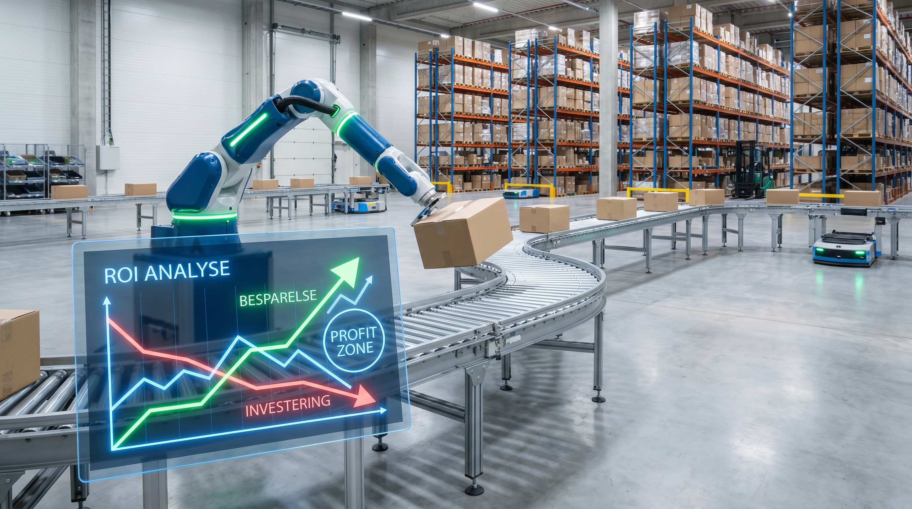

Automatisering er ikke billigt. Men det er heller ikke dyrere end at ansætte, ved den rigtige volumen.
Niveauer og investeringer
| Niveau | Eksempler | Investering |
|---|---|---|
| Basic | Scanning, WMS-dirigeret pluk | 20.000-100.000 kr. |
| Semi-auto | Transportbånd, pick-by-light | 150.000-500.000 kr. |
| Automat | AMR-robotter, automatisk sortering | 500.000-3 mio. kr. |
| Fuld auto | ASRS, goods-to-person | 3-30 mio. kr. |
👉 Få det datamæssige grundlag for din automatiseringsbeslutning. Kontakt SmartPack
Rentabilitetskriterie
Automatisering er rentabel når:
Månedlig besparelse > (Investering / 60 måneder) + Månedlig drift + Service
Eksempel: AMR-robot til 800.000 kr.
| Post | Kr./måned |
|---|---|
| Amortisering (800.000 / 60) | 13.333 |
| Service og vedligehold | 5.000 |
| Total månedlig omkostning | 18.333 |
| Erstatter 0,7 medarbejder (102 picks/time) | |
| Månedlig besparelse | 25.900 |
| Netto per måned | +7.567 |
Positiv ROI: 25.900 > 18.333. Netto: 7.567 kr./md. = 90.800 kr./år.
Det opdager de fleste for sent: for tidlig automatisering
Under 200 ordrer/dag er der ikke skalamæssigt grundlag for de større investeringer. AMR ved 150 ordrer/dag: break-even 5+ år. Ved 300 ordrer/dag: 2 år.
Hvornår giver automatisering ikke mening?
- Under 200 ordrer/dag.
- Meget variabelt sortiment (mange SKU'er med lav omsatningshastighed).
- Lav loftshjde (under 5 meter for de fleste automat-løsninger).
- Kapital er knapt og likviditet er prioritet.
ROI på konkrete tiltag
| Tiltag | Investering | Break-even | Krav |
|---|---|---|---|
| Scanning-workflow | 20.000-50.000 kr. | Under 2 måneder | Alle volumener |
| Transportbånd | 150.000-300.000 kr. | 7-14 måneder | 150+ ordrer/dag |
| AMR pick-robot | 800.000-1,5 mio. kr. | 24-48 måneder | 300+ ordrer/dag |
SmartPack og automatiseringsbeslutningen
SmartPack giver det datamæssige grundlag, du behøver, inden du investerer: nuværende picks per time, fejlrate, volumentrend og kapacitetsudnyttelse. Beslut på fakta, ikke måvefornømmelse.